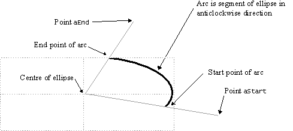
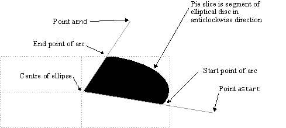

|
| |
The following example code demonstrate how to:
Draw ellipses and arcs. The first draws the whole ellipse; the second, one section of the ellipse; and in the third, the other section of the ellipse is drawn (also illustrating construction lines and points).
Draw two pie slices making an ellipse.
The code assumes that the ellipse and arc examples all use a common pre-defined rectangle:
...
TRect ellipseRect=Rect(); // for arcs and ellipse
ellipseRect.Shrink(10,10); // set size so inside the border rectangle
...
The arc and pie slice examples use two construction points as arguments:
...
TPoint screenCenterPoint=rect.Center(); // the center of the screen
// set up a pair of construction points for arc and pie slice drawing
TPoint constructionPoint1(15,15); // outside the construction ellipse
TPoint constructionPoint2(200,150); // inside the construction ellipse
...
The centre point is drawn in the second arc example to clarify arc construction.
You can use DrawEllipse() to draw an ellipse.
...
// draw an ellipse centered in the rectangle
gc.DrawEllipse(ellipseRect);
...
|
An arc is drawn as a portion of an ellipse. As well as the ellipse rectangle, the call must specify the two points: the first defines one end of a line from the geometric centre of the ellipse; the point of intersection between this line and the ellipse defines the start point of the arc. The second specified point acts in the same way for the end of the arc.

Arc construction
The example code here shows how an arc is drawn in an anti-clockwise
direction using constructionPoint1 and
constructionPoint2 as the start to the end points.
...
// draw an arc centered in the rectangle
gc.DrawArc(ellipseRect,constructionPoint1,constructionPoint2);
...
You can reverse the pair of construction point arguments to draw the other half of the ellipse. The construction points and screen centre are also drawn, with dotted construction lines:
...
// draw an arc centered in the rectangle
// that is the other portion of the ellipse
gc.DrawArc(ellipseRect,constructionPoint2,constructionPoint1);
// draw construction lines and points
gc.SetPenStyle(CGraphicsContext::EDottedPen);
gc.MoveTo(constructionPoint1);
gc.DrawLineTo(screenCenterPoint);
gc.DrawLineTo(constructionPoint2);
gc.SetPenSize(penSizeBold);
gc.Plot(constructionPoint1);
gc.Plot(constructionPoint2);
gc.Plot(screenCenterPoint);
...
|
The example code here shows how two pie slices are drawn. A pie slice is the area bounded by:
an arc as used above
the straight line from the start point from the geometric centre of the ellipse
the straight line from the end point from the geometric centre of the ellipse

Pie slice construction
Solid and patterned brush styles are used to fill the portions of the elliptical disc.
Use SetBrushStyle() to set the brush style to
solid.
Use SetBrushColour() to set the brush colour to
black.
Use DrawPie() to draw a pie slice.
Use SetBrushStyle() to set the patterned brush
style.
Use DrawPie() and reverse the pair of construction point
arguments so that the two pie slices together form a whole ellipse.
...
// draw a pie slice centered in the rectangle
gc.SetBrushStyle(CGraphicsContext::ESolidBrush);
gc.SetBrushColor(black);
gc.DrawPie(ellipseRect,constructionPoint1,constructionPoint2);
// draw the other portion of the elliptical disc
gc.SetBrushStyle(CGraphicsContext::EVerticalHatchBrush);
gc.DrawPie(ellipseRect,constructionPoint2,constructionPoint1);
...
Copyright ©2002 Symbian Ltd. 6.1-00174 |
|